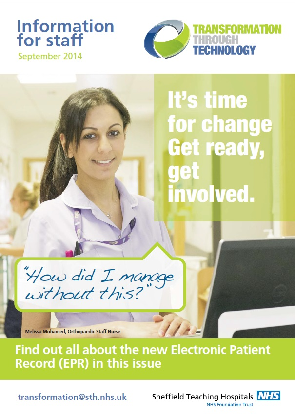

What’s changing?
Transformation Through Technology is a transformational change programme centred on improving patient care.
As a Trust, we are investing £35 million over the next five years in this programme. Transformation Through Technology is significantly changing the way we work and deliver care. With the help of new technology, in future we will have:/p>
- Quicker hospital admission and discharge
- Better assessment and more informed treatment because previous medical records will be available instantly
- Quicker inpatient admission through Advanced Bed Management
- Electronic alerts for allergies and safeguarding issues
- Clinic lists available electronically with patient casenote history
- Electronic prescribing
- More concise appointment letters
- Less repetition of the same questions for the patient
- Quicker diagnosis as immediate patient history available
- Remote access to patient details, particularly for community health staff
- Casenotes available immediately across all sites
- Electronic white boards on wards to aid patient flow
- Single Sign On so you view patient details on 19 different systems with just one password
- Multiple staff able to view casenotes at the same time
It’s not just about upgrading technology, it’s about completely changing the way we work. This programme will give us the best technology and patient information so we can provide the best patient care. To make this a success, all staff, regardless of their role, are encouraged to get involved and be aware of the changes.
The three new systems are:
- Electronic Patient Record
- Electronic Document Management System
- Clinical Portal
Go live for the new systems is Autumn 2015 but the opportunities for new ways of working will continue beyond this.
Hospital of the Future Training Center
We are one of the first hospitals in the country to have a ‘Hospital of the Future’ innovation centre
The Hospital of the Future is a fully equipped clinical environment which includes our planned clinical information systems, so staff can experience, influence and familiarise themselves with how our business will operate in the future.
Find out moreNewsletters
Catch up with news and development in our regular newsletters. Explore our newsletters below:
-
EDMS - Sept

-
EPR - Sept
 -
CP - Sept